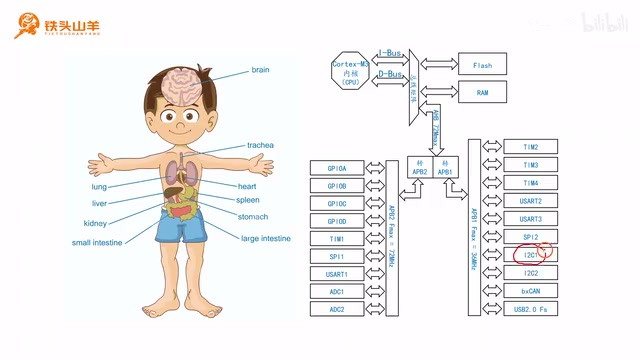
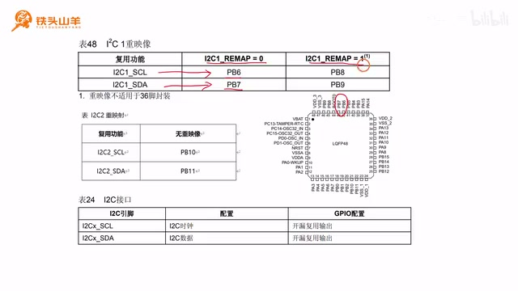
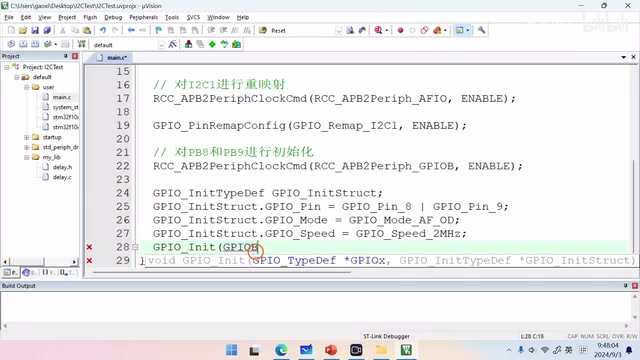
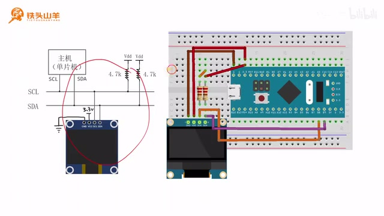
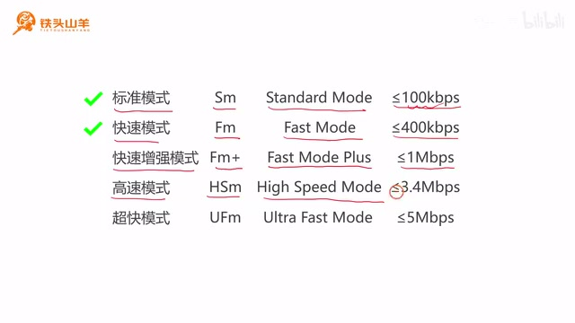
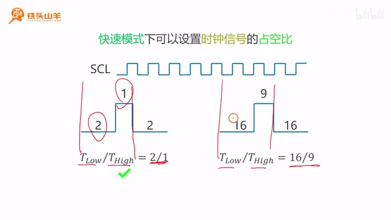
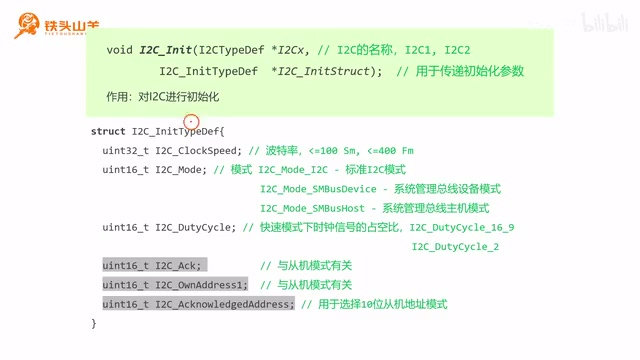
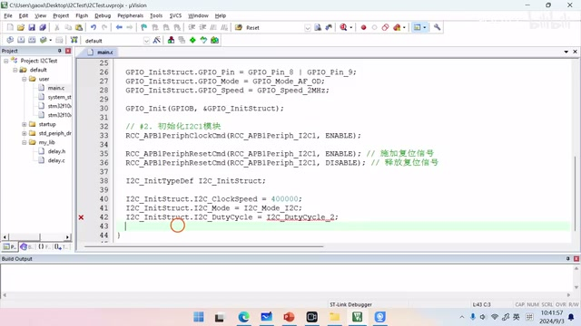

P019 · 4.3 （I2C）I2C模块的使用方法¶
各位同学大家好，我是铁头山羊。今天我们开始学习第四章的第三节，一起来了解单片机里的 I²C 模块如何使用。本套视频所需的材料都包含在开发套件包里，大家可以扫描屏幕上的二维码，到淘宝店铺购买。购买套件后，可以获得课程的课件和源码，也可以加入答疑群直接和 UP 主交流。
本期分成六部分：第一，简单介绍单片机里的 I²C 模块；第二，初始化 I²C 模块的 IO 引脚；第三，把一个带 I²C 接口的 OLED 显示器接到单片机上，看看电路该怎么连；第四，介绍 I²C 的速度模式；第五，讲快速模式下时钟信号的占空比怎么设置；最后编写代码，初始化 I²C 模块。下面让我们从第一部分开始。首先我们对单片机里面的这个 I²C 模块做一个简单的介绍。
I²C 模块简介¶
本节学习的 I²C 模块是单片机上的片上外设，作用是给单片机提供 I²C 接口。屏幕右侧的图是单片机内部结构框图，里面有一个个片上外设；I²C 模块也在其中，有 I²C1 和 I²C2 两个。

单片机结构图中标出了 I²C1 和 I²C2 片上外设。 · 原片 01:30
因为它是通信接口，所以需要使用 IO 引脚。I²C 模块有 SCL 和 SDA 两根线：SCL 是时钟线，SDA 是数据线。要使用 I²C 模块，就要先初始化这两个引脚。接下来讲 IO 引脚初始化代码怎么写。
IO 引脚初始化¶
前面的视频已经学过如何初始化 USART 模块，也就是串口的 TX 引脚。初始化 I²C 引脚也是一样的思路，需要先弄清两个问题：要初始化的 SCL、SDA 在哪里，以及要把它们初始化成什么模式。要弄清这两个问题，就要查之前的三张表：引脚分布表、重映射表和 IO 参数表。课程资料把这三张表放进了 Excel 文件。我们打开这个表格看一下。
Excel 表格由两部分组成。前面是一张较大的引脚分布表，介绍单片机 48 个引脚各自的功能，包括上电之后的主功能，以及复用功能。也就是说，每个引脚上电之后默认做什么，以及它还可以复用成什么功能。复用功能分成两部分：默认复用功能和重新设置后的复用功能。可以查这张长表找到引脚，不过查起来比较麻烦，所以后面又把它整理成一个个模块的表。本期学习 I²C，就找这三张相关表。
先看前两张表，它们都是 IO 重映射表，第一张属于 I²C1，第二张属于 I²C2。I²C 有 SCL 和 SDA 两个引脚，SCL 是时钟，SDA 是数据。I²C1 不重映射时默认在 PB6 和 PB7，SCL 在 PB6、SDA 在 PB7；重映射后会移到 PB8 和 PB9。I²C2 没有重映射选项，只能使用默认的一组 PB10、PB11，在单片机引脚图上可以找到这两组 I²C 引脚。

I²C1 重映射表显示 SCL/SDA 从 PB6/PB7 改到 PB8/PB9。 · 原片 03:45
再看第三张表，这是 IO 引脚配置表，告诉我们 SCL 和 SDA 应该初始化成什么模式。SCL 是 I²C 时钟线，SDA 是 I²C 总线数据线，两根引脚都要设置成复用输出开漏模式。为什么是复用输出开漏？I²C 是单片机内部的一个模块，我们要通过 I²C 模块间接控制 IO 引脚，因此要用复用模式。上一期讲过逻辑线与，要实现逻辑线与就要使用开漏模式。两者加起来就是复用输出开漏模式，这就是这个模式的来历。
下面写 IO 引脚初始化代码。本期使用 I²C1，为了增加一点难度，把 I²C1 的两个 IO 引脚重映射到 PB8 和 PB9，再把 PB8、PB9 初始化成复用输出开漏模式。重映射后的引脚就是 PB8、PB9；接下来我们按这个目标，先完成重映射，再配置引脚模式。按这个思路编写代码。
编写代码前先新建工程。打开百度网盘课程资料，把 template，也就是模板工程下载下来。将资料地址复制到浏览器地址栏，打开课程资料，在根目录下载 template.zip。下载完成后得到压缩包，右键解压到当前文件夹，得到一个文件夹。因为本期要测试 I²C 模块，就把这个工程重新命名为 I2CTest。
进入这个文件夹，把里面的工程文件重命名为 I2CTest，上面的相关文件也重命名，然后双击打开工程。接下来做两件事：第一，把 I²C1 重映射到 PB8、PB9；第二，把这两个引脚初始化为复用输出开漏模式。先做重映射：打开 main.c，声明一个函数，把 I²C1 初始化代码写在函数里，命名为 My_I2C_Init。先写函数原型并加分号，再把原型复制到下面实现，去掉分号并加一对花括号，这就是函数体。I²C 初始化第一步是初始化 IO 引脚，先写下注释，接下来对 I²C1 重映射。
要对 I²C1 重映射，需要使用 AFIO 模块，所以先开启 AFIO 时钟。代码调用 RCC_APB2PeriphClockCmd，第一个参数填 RCC_APB2Periph_AFIO，第二个参数填 ENABLE，表示使能 AFIO 时钟。这是开启 AFIO 时钟的第一步。然后调用 GPIO_PinRemapConfig 设置重映射参数，填 GPIO_Remap_I2C1 和 ENABLE，表示使能 I²C1 重映射。写完这两行，重映射就完成了。
重映射后第二个参数填 ENABLE，表示使能重映射；这两行代码写完，重映射工作就完成了。然后第二步初始化 PB8 和 PB9，把两个引脚都初始化成复用输出开漏模式。先开启 GPIOB 时钟，调用 RCC_APB2PeriphClockCmd，参数填写 RCC_APB2Periph_GPIOB 和 ENABLE。
然后声明结构体变量 GPIO_InitTypeDef GPIO_InitStruct，并给结构体成员赋值。因为要初始化的 PB8 和 PB9 参数相同，可以把 GPIO_Pin 写成 GPIO_Pin_8 | GPIO_Pin_9，表示同时初始化 PB8 和 PB9。如果两个引脚的参数一样，就可以这样合在一起写，而不必分别初始化。接着设置模式为 GPIO_Mode_AF_OD，也就是复用输出开漏。第三项填最大输出速度。I²C 模块最大速度是 400K，后面再讲原因；这里选择慢速就够了，2 MHz 就可以。最后调用 GPIO_Init(GPIOB, \&GPIO_InitStruct) 对两个引脚完成初始化。这样 IO 引脚初始化代码就写完了。

初始化代码将 PB8、PB9 配成复用开漏输出并设置 GPIO 速度。 · 原片 09:55
连接 OLED 电路¶
从开发套件包里拿出这块屏幕，它叫 OLED 显示器，能够显示内容。接下来的几期视频会对 OLED 编程。既然要使用 OLED，就来看第三部分：显示器电路应该怎么连接。
先看左边的图，了解 OLED 外观。黑色部分是 OLED 屏幕，显示内容就在这里。顶部有四个引脚。这块 OLED 显示器模块就是通过上面的这些引脚连接到单片机。OLED 模块通过 I²C 接口和单片机通信，其中 SCL 是时钟线，SDA 是数据线；另外两个引脚用于供电，GND 接地，VCC 接电源，例如 3.3V。
右侧电路图中，主机就是单片机，标出了主机的 SCL 和 SDA。刚才分析过，I²C1 重映射之后，SCL 是 PB8，SDA 是 PB9。这两根线分别是总线的时钟线和数据线。图中还有两颗上拉电阻，都接高电压 3.3V，一般取 4.7 kΩ，选别的阻值也没问题，比如开发套件包里的电阻是 1 kΩ，用 1 kΩ 也完全可以。下面接 OLED：屏幕 GND 接单片机 GND，VCC 接 3.3V，SCL 接 I²C 总线 SCL，SDA 接 I²C 总线 SDA。电路图就是这样，再按图转换成接线图，照着连接电路。
下面分析接线图。OLED 的 GND 接地，通过棕色线接到单片机的 G，也就是 GND；VCC 接高电压 3.3V，通过图中的位置接到单片机 3.3V。SCL 和单片机的 SCL 直接相连，通过橙色线接到 PB8，PB8 就是 SCL。所以这根线把显示器的时钟线连到单片机的 I²C1 时钟引脚。SDA 接单片机的 SDA，用紫色线接到 PB9，PB9 就是 I²C1 的 SDA。
两颗上拉电阻一端接高电压：图中一颗直接接 3.3V，另一颗通过线路接 3.3V；电阻另一端分别接 SCL 和 SDA，一根接 SCL，另一根接 SDA。这样电路就分析出来了。接好之后的效果如图。电路稍微复杂，大家一定仔细连接，不要连错，多检查几遍。连接好之后就是视频里的样子，也不要忘记给单片机连调试器。

OLED、上拉电阻与 STM32 开发板的 I²C 接线示意。 · 原片 12:00
电路连接好后进入第四部分，学习 I²C 的速度模式。学习速度模式前先介绍波特率。学习串口时已经接触过波特率，I²C 的波特率定义和串口一样。I²C 传输数据时一个比特一个比特地传输，每个时钟周期传输一个比特，所以波特率就是每秒传输位的个数。波特率越大，通信速度越快。所以看速度模式时，要根据所需波特率选择合适的模式。
I²C 速度模式¶
再看 I²C 速度模式。I²C 支持几种不同的速度模式。标准模式叫 SM（Standard Mode），波特率必须小于等于 100 kbps，最大就是 100 kbps。快速模式叫 FM（Fast Mode），波特率小于等于 400 kbps。也就是说，快速模式的上限是 400 kbps。快速增强模式 FM+（Fast Mode Plus）最大可达 1 Mbps；高速模式 HSm（High Speed Mode）最大 3.4 Mbps；超快模式 UFm（Ultra Fast Mode）最大 5 Mbps。这几种模式的速度依次提高，超快模式的上限是 5 Mbps。
这款单片机只支持标准模式和快速模式，即 SM 和 FM。波特率小于等于 100 kbps 时选标准模式；大于 100K 但小于等于 400K 时选快速模式。波特率一定不能超过 400 kbps，因为单片机不支持。因此即便总线设备支持更快的速度，本课这颗单片机也不能把波特率设得高于这个值。

I²C 标准、快速、快速增强、高速和超快模式及其速率上限。 · 原片 14:45
了解速度模式后，介绍第五部分：快速模式下时钟信号的占空比。
快速模式下的时钟占空比¶
先强调，只有快速模式下才能设置时钟信号的占空比。刚才说过 I²C 模块支持 SM 标准模式和 FM 快速模式，只有 FM 下能设置这个参数。
I²C 总线有两根线：SDA 传数据，SCL 传时钟信号。时钟信号就是高低变化的电压，它控制通信速度。占空比是在一个周期里高电压所占的比例。也就是拿一个完整的时钟周期作比较，看高电平持续了多长时间。这款单片机可选两种时钟占空比：2:1 和 16:9。2:1 表示低电压时间比高电压时间为 2:1，即一个周期里低电压占两份，高电压占一份。16:9 表示低电压占 16 份，高电压占 9 份。

时钟波形图对比 2:1 和 16:9 的低电平、高电平时间比例。 · 原片 16:45
两种怎么选？没有特殊要求，一般选 2:1；除非对方明确要求 16:9，才选后者，通常碰不到这种要求。
讲完 I²C 速度模式和时钟信号占空比，开始本课最后一部分：编写代码初始化 I²C 模块。
I²C 模块初始化¶
先学习新的编程接口 I2C_Init。I²C 表示 I²C 模块，Init 是 initialize 的缩写，代表初始化，所以这个接口用来初始化 I²C 模块。它有两个参数：第一个参数 I2Cx 用来填写 I²C 的名称，使用哪个模块就填哪个名称，本期使用 I²C1，所以填 I²C1。第二个参数是结构体指针。来看结构体定义，里面有六个成员。
下面三个成员和从机有关，我们用不到。这也就是结构体下面的三个成员。单片机一般在 I²C 总线上作为主机，很少作为从机，而且作为从机编程也比较复杂，所以本课不学习从机，这三个参数不用设置，只看上面三个。
第一个成员 I2C_ClockSpeed 用来设置波特率，想设置多少就填多少。这里的值就是通信波特率，直接填目标数值。例如刚才那块 OLED 支持快速模式，最高波特率可设置到 400K，也就是 40 万，填到这个参数里即可。填 400K 时会自动把 I²C 设置成快速模式。
第二个成员 I2C_Mode 用来设置 I²C 的使用方法。有三种用法：I2C_Mode_I2C 代表标准 I²C 模式，本课学习这种；另外两种和 SMBus（系统管理总线）有关，分别是系统管理总线设备模式和主机模式。SMBus 用不到，这两种模式不用考虑，直接填标准 I²C 模式。
第三个成员 I2C_DutyCycle 用来设置快速模式下的占空比。

I2C_InitTypeDef 结构体及其初始化参数说明。 · 原片 17:50
因为刚才选了 400K 波特率，自动进入快速模式，所以要设置占空比。可选 2:1 和 16:9；没有特殊要求，就选择 2:1。填好之后，下面的成员不用管。
下面看 I²C 模块初始化的整体代码。I²C1 是单片机上的片上外设，使用前先开启 I²C1 时钟。调用 RCC_APB1PeriphClockCmd。
参数为 RCC_APB1Periph_I2C1 和 ENABLE，ENABLE 表示开启时钟。注意这里是 APB1，不是 APB2。也就是说开启 I²C1 外设时钟要用 APB1 总线对应的 RCC 函数参数。为什么是 APB1 而不是 APB2？稍后讲时钟树那一章时再解释。
后面两句是复位 I²C1 模块。复位就好比手机出故障后重启，重启后故障可能消失。使用 I²C1 前也要对模块重启一下，这两行代码就是做复位。调用 RCC_APB1PeriphResetCmd，第一个参数填 I²C1，第二个参数填 ENABLE，表示施加复位信号，相当于按下复位按钮。再调用一次函数，参数仍为 I²C1，第二个参数填 DISABLE，表示松开复位按钮。先按下再松开，I²C1 就被复位了。调用一次施加复位，再调用一次释放复位信号，这两句要成对完成。把代码写在 IO 引脚初始化后面。
第二步是初始化 I²C1 模块。首先开启 I²C1 时钟，调用 RCC_APB1PeriphClockCmd，第一个参数填 RCC_APB1Periph_I2C1，第二个参数填 ENABLE。这句对应 RCC_APB1PeriphClockCmd(RCC_APB1Periph_I2C1, ENABLE);。然后复位 I²C1，调用 RCC_APB1PeriphResetCmd，先给 I²C1 传 ENABLE，施加复位信号；再调用一次，把参数改成 DISABLE，释放复位信号。也就是 RCC_APB1PeriphResetCmd(RCC_APB1Periph_I2C1, ENABLE);，然后再把第二个参数改为 DISABLE 调用一次。两步操作之后，I²C1 模块就完成复位。
接着用 I2C_Init 初始化模块。因为第二个参数需要结构体指针变量，先在上面声明变量，再给成员赋值。I2C_ClockSpeed 选择 400K，也就是 400 后面加三个零；代码中具体写成 400000。I2C_Mode 选择标准 I²C 用法 I2C_Mode_I2C；I2C_DutyCycle 设置占空比，没有特殊要求就选 2:1，也就是 I2C_DutyCycle_2。这三个成员设置完成后，调用 I2C_Init 完成初始化。
变量声明为 I2C_InitTypeDef，起名 I2C_InitStruct，名字可以自己定。给它的成员赋值：第一个 I2C_ClockSpeed 选择 400K，也就是 400000；第二个 I2C_Mode 选择标准 I²C 用法 I2C_Mode_I2C；第三个 I2C_DutyCycle 选择 2:1。选快速模式后需要设置占空比。三项设置完成后调用 I2C_Init，第一个参数填 I²C1，也就是模块名称；第二个参数填刚才初始化变量的地址。这样完成初始化。

I²C_Init 的配置代码设置 400000 波特率、标准 I²C 模式和 2:1 占空比。 · 原片 24:00
最后还要闭合 I²C1 的总开关。图中这里有一个总开关，只有闭合它，I²C 模块才能正常传输数据。调用 I2C_Cmd 控制开关，这个接口不再单独讲。它有两个参数：第一个填模块名称，本期是 I²C1；第二个决定闭合还是断开，闭合填 ENABLE，断开填 DISABLE。这里要闭合，所以调用 I2C_Cmd(I2C1, ENABLE)，使能 I²C1 模块。
整个 I²C 初始化工作完成后，在 main 函数里调用 My_I2C_Init。也就是把刚才写好的初始化函数放到 main 的流程中执行。按左上角按钮编译代码，没有错误，也没有警告，代码就写完了。
好的，以上就是本期视频的全部内容。我是铁头山羊，感谢大家收看。让我们下期视频再见。